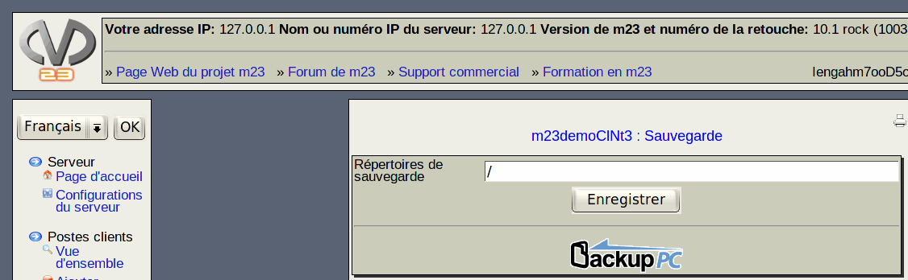

Dans ce dialogue, vous pouvez indiquer tous les répertoires du poste client à sauvegarder. Entrez les répertoires désirés, séparés par des virgules, dans le champ de saisie Répertoires de sauvegarde, ensuite, cliquez sur Enregistrer.
La sauvegarde réelle sera exécutée par le programme BackupPC, que vous pouvez démarrer par un clic sur l'icône. Dans l'interface graphique de BackupPC, vous avez accès à des fonctions de sauvegarde additionnelles. Le nom de l'utilisateur et le mot de passe sont identiques à ceux utilisés pour accéder au serveur m23.
root
2015-04-30